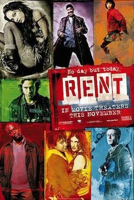
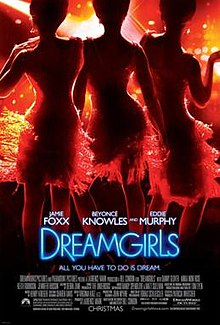

My Favorite Musicals that Became Movies
RENT, Hamilton, Dreamgirls, and a bonus surprise!
RENT
Rent is a 2005 American musical drama film directed by Chris Columbus. It is an adaptation of the 1996 Broadway musical of the same name, in turn based on Giacomo Puccini's 1896 opera La Bohème. The film, which features six of the original Broadway cast members reprising their roles, depicts the lives of several Bohemians and their struggles with sexuality, drugs, paying their rent, and life under the shadow of AIDS in the gritty East Village of New York City from 1989 to 1990.

Hamilton
Hamilton: An American Musical is a sung-and-rapped-through musical by Lin-Manuel Miranda. It tells the story of American Founding Father Alexander Hamilton. Miranda said he was inspired to write the musical after reading the 2004 biography Alexander Hamilton by Ron Chernow. The show draws heavily from hip hop, as well as R&B, pop, soul, and traditional-style show tunes. It casts non-white actors as the Founding Fathers and other historical figures. Miranda described Hamilton as about "America then, as told by America now"

Dreamgirls
Dreamgirls is a 2006 American musical drama film written and directed by Bill Condon and jointly produced and released by DreamWorks Pictures and Paramount Pictures. Adapted from the 1981 Broadway musical of the same name, Dreamgirls is a film à clef, a work of fiction taking strong inspiration from the history of the Motown record label and one of its acts, The Supremes. The story follows the history and evolution of American R&B music during the 1960s and 1970s through the eyes of a Detroit, Michigan girl group known as the Dreams and their manipulative record executive.

Bonus - The musical I HOPE becomes a movie!.
If/Then
Elizabeth Vaughn returns to New York City to start her life over. She’s thirty-eight, recently divorced, twelve years away from her beloved New York, a city planner who has only taught city planning and has never planned a city. On her first day back (“What If?”), she meets two friends in the park—Lucas, a friend from her undergrad years (and onetime lover, long ago, who now identifies as bisexual), and Kate, her spirited new neighbor. Lucas wants her to come with him to meet some of his fellow activists, gathering signatures at a table across the park. But Kate wants her to get coffee and listen to a sexy guy playing guitar nearby. Kate calls her “Liz”—the two of them having decided the previous night, over wine, that Elizabeth should have a new name for her new life. Lucas, for his part, likes “Beth”.We see her go both ways—with Kate, as “Liz”, and with Lucas, as “Beth”. Her lives diverge in that moment. And we follow them both.